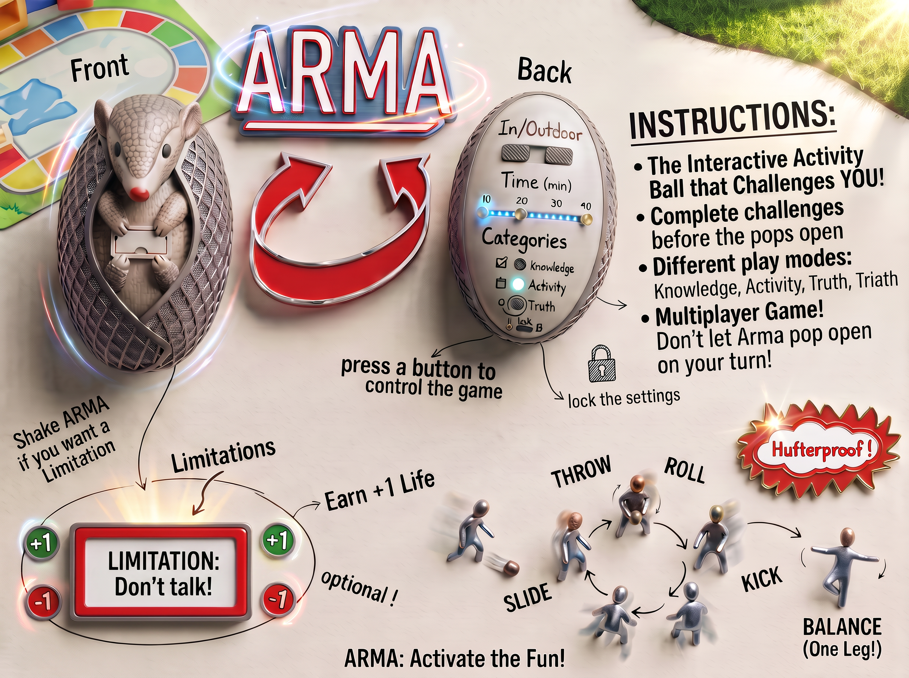

Year 2 · Child & Play Perspectives
ARMA:
play together.
A co-designed interactive play ball that turns different abilities, ideas and movement into a shared game.
Designed with
children, not for them.
Our team began with co-design sessions with children, investigating how they experience and navigate communication barriers while playing together. Through conversation, movement and making, we focused on what helps every child take an active role.
Those sessions informed ARMA: an armadillo-inspired play ball that proposes activities and challenges while inviting a group to adapt how they play together.
From insight
to interaction.
The co-design work showed that participation is strongest when children can use more than spoken language, build their own ways of communicating and collaborate proactively. We translated these insights into an open-ended play object rather than a fixed game with a single right answer.
ARMA combines a playful character with changeable challenges, game modes and optional limitations. The group can throw, roll, slide, kick or balance the ball while deciding how to make the activity work for everyone.
